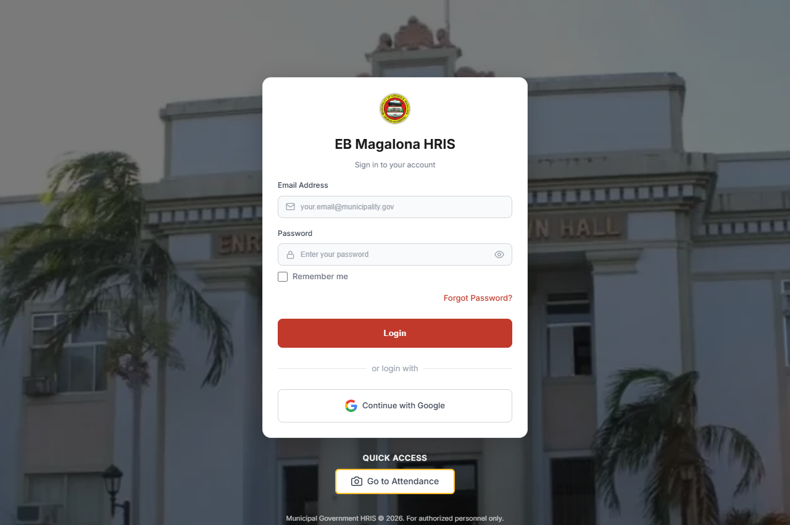

🌟 Official Live System UI • Project Leader
Live Municipal Deployment
EB Magalona HRIS
Role: Angela M. Oñate — Project Leader / Manager
The EB Magalona HRIS is a web-based system designed to manage employee records, monitor attendance, and streamline human resource processes in the municipal government. It provides secure and efficient access to HR-related information for authorized personnel.
📂 Employee 201 File Records
Centralized digital repository replacing physical filing cabinets with digitized municipal personnel profiles, job appointments, and service records.
⏱️ Real-time Attendance Kiosk
Integrated dedicated kiosk check-in at
/attendance/kiosk enabling accurate, automated daily time recording for municipal departments.🔒 Role-Based Security & Auth
Multi-tier role access for HR officers, department heads, and municipal administrators, complete with Google OAuth and password authentication.
📑 Automated HR Processes
Streamlining leave applications, approvals, attendance tracking, and administrative compliance reporting across the local government unit.